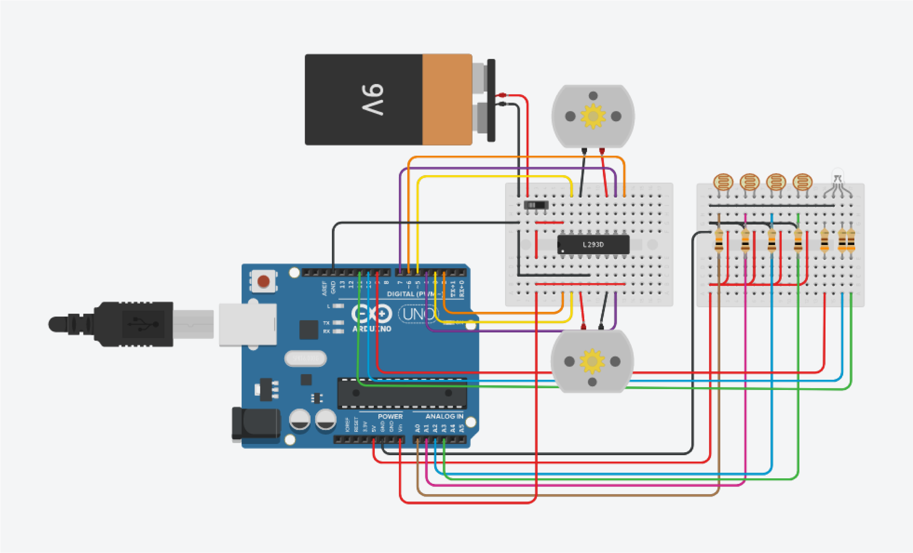

Seguidor de Linha
Um seguidor de linha (também conhecido como “Follow line”) é uma categoria de robôs autônomos, que são parecidos com carros de corrida, pois a combinação de motores, sensores e inteligência artificial,
faz com que objetivo seja percorrer um determinado percurso no menor tempo possível.
É feito competição de seguidores de linha em diversos lugares do mundo, o robô precisa estar em cima de uma manta de borracha, com uma marcação em branco para ele seguir.
Em Joinville, temos a equipe Wickedbotz, formada por alunos da Católica, que todo ano fazem batalhas de seguidores de linha.
Equipe Wickedbotz

// MOTOR
#define IN1 2
#define IN2 4
#define IN3 7
#define IN4 5
#define ENA 3
#define ENB 6
// LED RGB
#define LEDR 9
#define LEDB 10
#define LEDG 11
// SENSOR
#define S1 A0
#define S2 A1
#define S3 A2
#define S4 A3
void setup()
{
// MOTOR
pinMode(IN1,OUTPUT);
pinMode(IN2,OUTPUT);
pinMode(IN3,OUTPUT);
pinMode(IN4,OUTPUT);
pinMode(ENA,OUTPUT);
pinMode(ENB,OUTPUT);
analogWrite(ENA,255);
analogWrite(ENB,255);
// LED RGB
pinMode(LEDR, OUTPUT);
pinMode(LEDB, OUTPUT);
pinMode(LEDG, OUTPUT);
Serial.begin(9600);
}
void loop()
{
// Leitura dos sensores
int s1, s2, s3, s4;
s1=analogRead(S1);
s2=analogRead(S2);
s3=analogRead(S3);
s4=analogRead(S4);
int luz = 500;
Serial.print(s1);
Serial.print(" ");
Serial.print(s2);
Serial.print(" ");
Serial.print(s3);
Serial.print(" ");
Serial.print(s4);
Serial.print(" ");
if(s1<luz && s2>luz && s3>luz && s4<luz){
//frente
Serial.println(" Frente ");
digitalWrite(LEDR, LOW);
digitalWrite(LEDG, HIGH);
digitalWrite(LEDB, LOW);
digitalWrite(IN1,HIGH);
digitalWrite(IN2,LOW);
digitalWrite(IN3,LOW);
digitalWrite(IN4,HIGH);
}else if (s1>luz && s2<luz && s3<luz && s4<luz){
// direita
Serial.println(" Direita ");
digitalWrite(LEDR, HIGH);
digitalWrite(LEDG, LOW);
digitalWrite(LEDB, LOW);
digitalWrite(IN1,LOW);
digitalWrite(IN2,HIGH);
digitalWrite(IN3,LOW);
digitalWrite(IN4,HIGH);
}else if (s1<luz && s2<luz && s3<luz && s4>luz){
// esquerda
Serial.println(" Esquerda ");
digitalWrite(LEDR, HIGH);
digitalWrite(LEDG, LOW);
digitalWrite(LEDB, LOW);
digitalWrite(IN1,HIGH);
digitalWrite(IN2,LOW);
digitalWrite(IN3,HIGH);
digitalWrite(IN4,LOW);
}else{
// desligado
Serial.println(" Parado ");
digitalWrite(LEDR, LOW);
digitalWrite(LEDG, LOW);
digitalWrite(LEDB, HIGH);
digitalWrite(IN1,LOW);
digitalWrite(IN2,LOW);
digitalWrite(IN3,LOW);
digitalWrite(IN4,LOW);
}
}